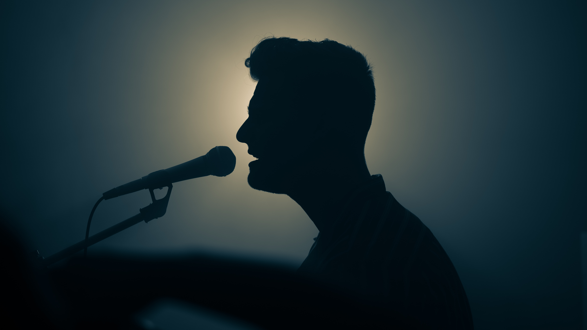
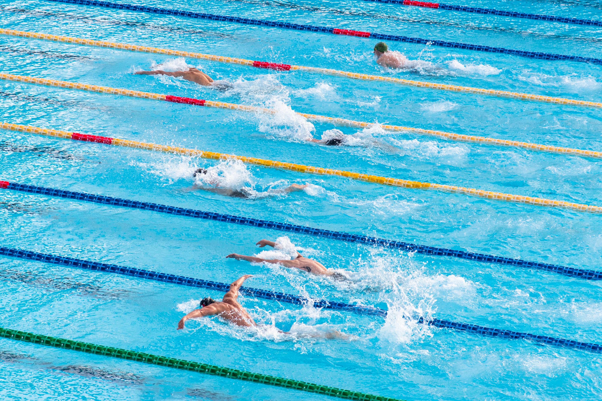

Singing is not just a hobby for me; it's a way to express my emotions and connect with others. Whether I'm belting out my favorite songs in the shower or performing on stage, the joy of music fills my heart. Singing allows me to explore different genres and experiment with my voice, creating a beautiful harmony between passion and artistry.
The sensation of gliding through the water is nothing short of exhilarating. Swimming is my escape from the hustle and bustle of everyday life. It's a peaceful, rhythmic activity that not only keeps me fit but also provides me with a sense of tranquility. Whether I'm doing laps in a pool or floating in the open water, I find solace in the embrace of the water.
Riding motorcycles is my ultimate thrill. The feeling of freedom as the wind rushes past me and the open road beckons is unparalleled. It's a mix of adrenaline and serenity, where every twist and turn becomes an adventure. Exploring new places on two wheels is an unforgettable experience that constantly fuels my wanderlust.

Giving back to the community is a fulfilling and essential part of my life. Volunteering allows me to make a positive impact on the lives of others while fostering a sense of compassion and empathy. Whether I'm participating in environmental clean-ups, helping at a local shelter, or contributing to a charitable cause, I believe that small acts of kindness can create a ripple effect of positive change.

Chess is my intellectual playground. It's a game of strategy, tactics, and endless possibilities. I enjoy the mental challenge it presents, as it sharpens my analytical skills and decision-making abilities. Each move on the chessboard is a calculated step towards victory, making it a fascinating and never-ending pursuit of mastery.

Martial arts is not just about physical strength; it's a discipline that encompasses both mind and body. It instills self-discipline, self-control, and respect for others. Through martial arts, I've not only learned effective self-defense techniques but also gained a profound sense of inner peace and balance.

The gym is my sanctuary for physical growth and well-being. It's where I challenge myself to become stronger, both mentally and physically. Whether I'm lifting weights, doing cardio, or practicing yoga, the gym is my place of empowerment. The sense of accomplishment after a tough workout is incredibly rewarding.